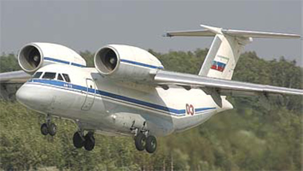

Ан-72

- Разработчик: ОКБ Антонова
- Страна: СССР
- Первый полет: 1977
- Тип:Многоцелевой транспортный самолет
Ан-72 — это советский многоцелевой транспортный самолёт, разработанный в ОКБ имени О. К. Антонова. Он был создан для замены самолёта Ан-26 и состоит на вооружении ВС РФ и ряда других государств мира.
Первый полёт Ан-72 совершил 31 августа 1977 года. В ноябре 1983 года лётчиками-испытателями Мариной Попович и Сергеем Максимовым на Ан-72 были установлены мировые рекорды максимальной высоты полёта — 13 410 метров и высоты горизонтального полёта — 12 980 метров для самолётов этого класса.
Ан-72 имеет грузоподъёмность до 5 тонн и возможность воздушного десантирования. Самолёт оснащён двумя турбовентиляторными двигателями Д-36, которые обеспечивают достаточный расход воздуха и сравнительно «холодную» выхлопную струю газов.
На основе Ан-72 был создан многоцелевой транспортный самолёт Ан-74, отличающийся удлинённым крылом, отдельным рабочим местом штурмана и более мощной ВСУ. Семейство самолётов также включает пассажирский самолёт Ан-148.
| Летно технические характеристики | |
|---|---|
| Модификация | Ан-72 |
| Размах крыла максимальный, м | 31.89 |
| Длина, м | 28.07 |
| Высота, м | 8.75 |
| Площадь крыла, м2 | 98.62 |
| Масса, кг | |
| - пустого самолета | 19050 |
| - нормальная взлетная | 30500 |
| Тип двигателя | 2 ТРД Прогресс (Лотарев) Д-36 (Д-436) |
| Тяга, кН | 63.74 (73.62) |
| Максимальная скорость, км/ч | 705 |
| Практическая дальность, км | 4800-5000 |
| Практический потолок, м | 10000 |
| Экипаж, чел | 3-4 |
| Полезная нагрузка: | 68 солдат или 57 парашютистов, или 24 носилок с сопровождающими или 10000 кг груза. |